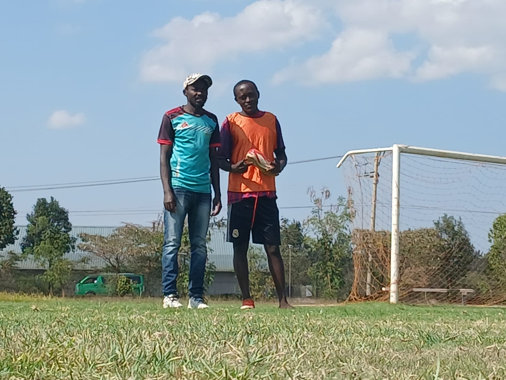
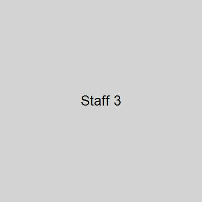
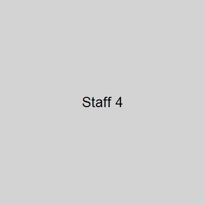

About Karibaribi FC
Our history, our story, and our legacy.
Karibaribi Football Club, commonly referred to as Karibaribi FC or simply KFC,
is a professional football club based in Karibaribi, Thika, Kenya.
They compete in the Kenya County League, the good tier of Kenya football.
Manager: Pius Muindi
Founded: 1978
Arena/Stadium: Karibaribi Grounds
Leagues: County Premier League
Training ground: Karibaribi Grounds
Location: Karibaribi, off Thika-Mangu Road
Mascot:


Gallery


Our Team Staff

Pius Muindi
Head Manager since 2015, leading Karibaribi FC with passion and strategy.

Alex Wakahia
Assistant Coach focusing on fitness and tactics.

application available
Team physiotherapist ensuring players remain fit and ready.

applivation available
Specialist Goalkeeper Coach with 20+ years experience.